Juan Carlos Ferrero y Francisco Clavet , las dos últimas esperanzas del tenis español masculino en el Abierto de Australia , fueron eliminados hoy en la tercera ronda.
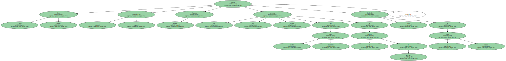Los dos partidos habían sido suspendidos el sábado por la lluvia y en la reanudación , el marroquí Yunes El Aynaui se impuso finalmente a Ferrero por 6-7 ( 3-7 ) , 6-4 , 6-4 , 6-7 ( 5-7 ) y.
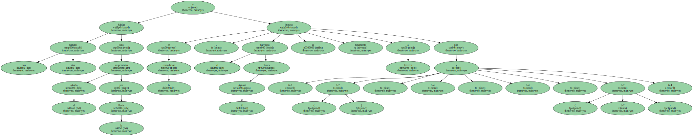Un descuido , fruto quizás de su inexperiencia en torneos del Grand Slam , costó el partido al jugador de Onteniente.

El Aynaui le rompió el servicio en el séptimo juego y esa ventaja fue suficiente para que el marroquí se alzase con la victoria.
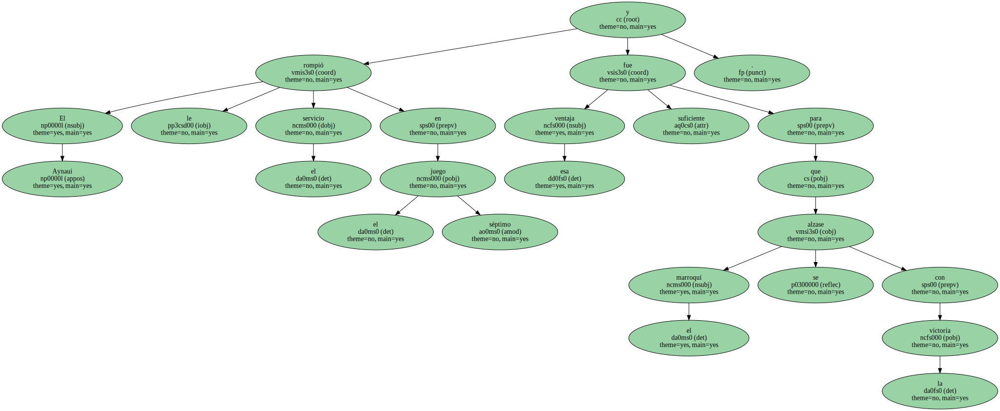Ferrero , que antes de llegar aquí sólo había participado en el US Open el pasado año cayendo en la primera ronda , ha ganado en Melbourne dos partidos , contra el australiano Scott Draper y el italiano Laurence Tieleman.
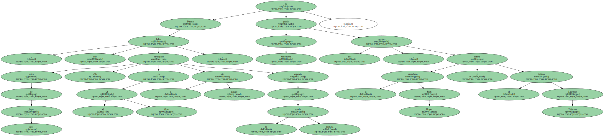El discípulo de Antonio Martínez Cascales se había convertido en una de las revelaciones del torneo y de haber vencido al marroquí hubiera tenido , en teoría , un cuadro accesible para seguir adelante , al menos una ronda , pues el próximo rival hubiera sido el francés Arnaud Clement.
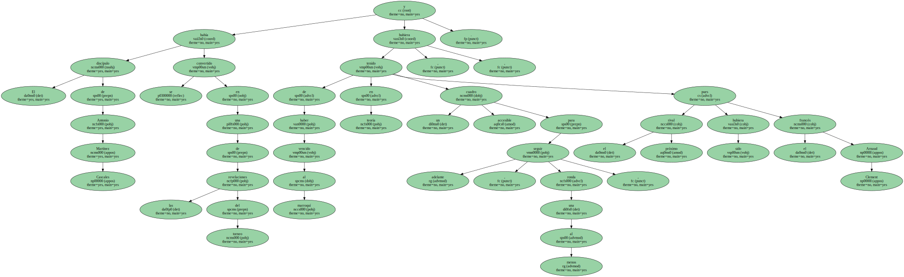Con su victoria , El Aynaui , de 28 años , iguala su mejor registro en el Grand Slam.
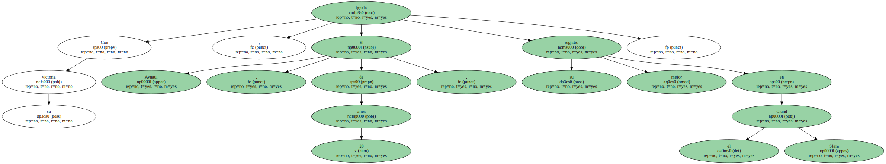El marroquí alcanzó también la cuarta ronda de Roland Garros en 1995.
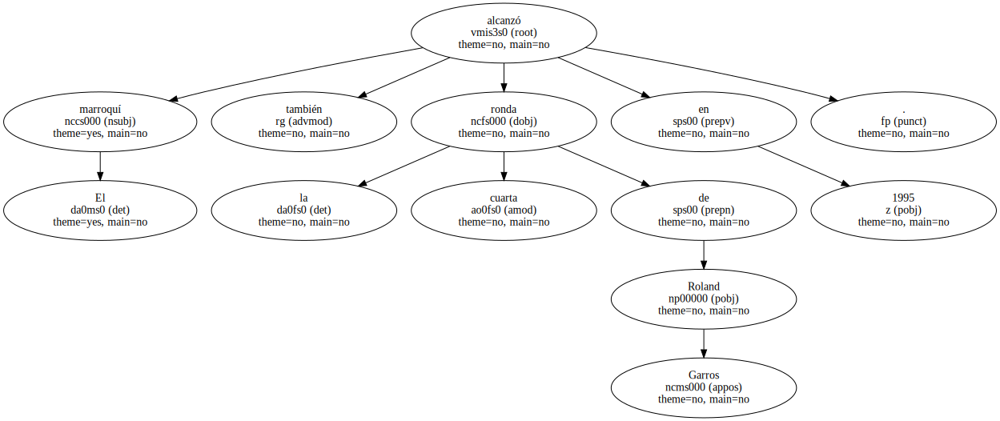Es su mejor actuación en el Abierto de Australia donde no había pasado de la segunda ronda.
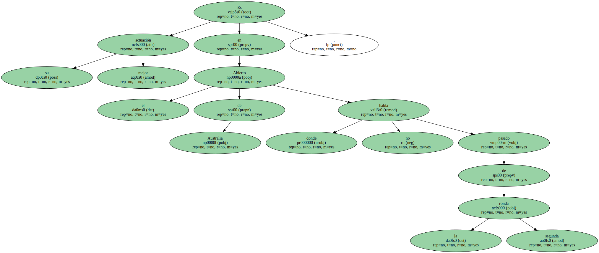La agresividad del surafricano Wayne Ferreira acabó con el madrileño Francisco Clavet por 6-3 , 6-4 , 3-6 y 6-3.
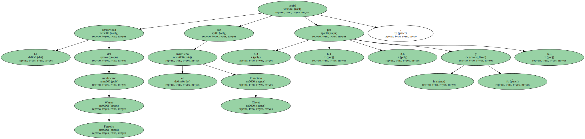El jugador de Johannesburgo consiguió quince saques directos y 64 golpes ganadores que marcaron el desarrollo del partido , y Clavet demasiado incómodo con el viento , no pudo desarrollar el tenis con el que se impuso al croata Goran Ivanisevic.
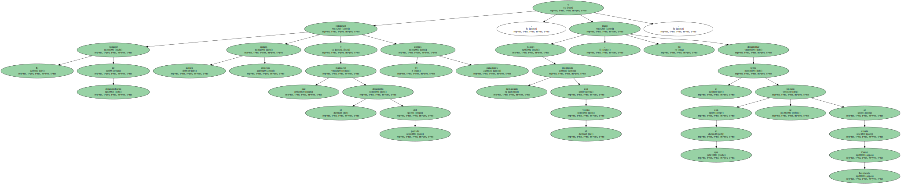Ferreira avanza a los octavos de final de este torneo por séptima vez.
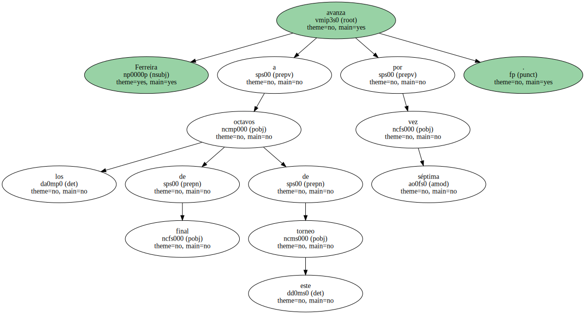El surafricano , de 28 años , fue semifinalista en Melbourne en 1992.
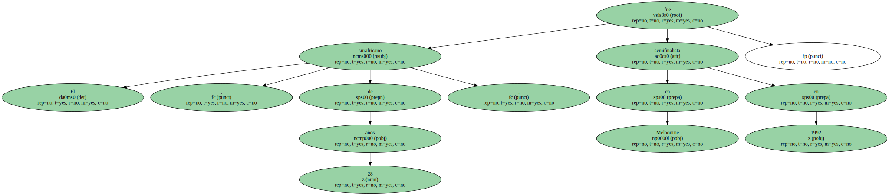Si había un partido que llamaba la atención en el programa de hoy éste era el que enfrentaba al estadounidense Andre Agassi y al australiano Mark Philippoussis.
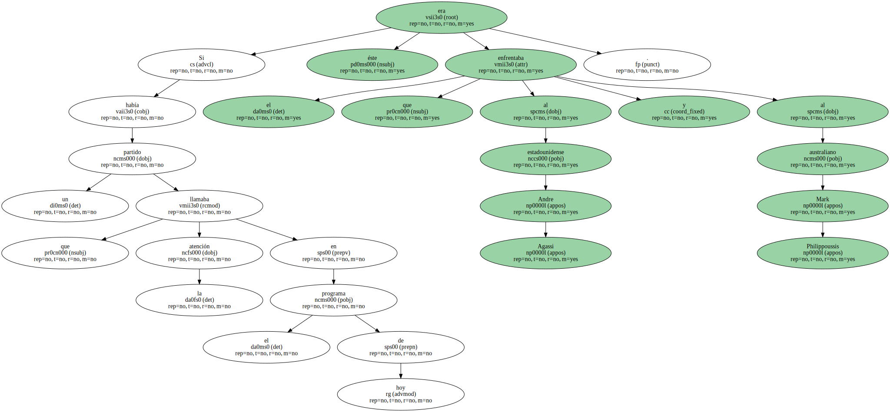Ambos mostraron sobre la pista central un tenis brutal , con feroces intercambios , interrumpidos por los detonadores servicios de " Scud ".
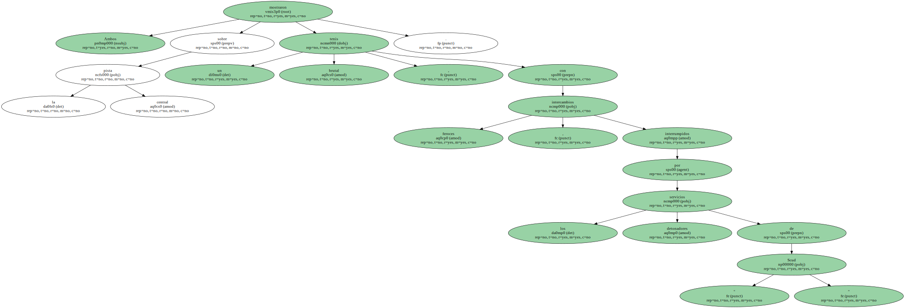Agassi venció por 6-4 , 7-6 ( 7-4 ) , 5-7 y 6-3 después de dos horas y 45 minutos de lucha , apoyado desde la grada por su novia , la alemana Steffi Graf , y después de salvar una comprometida situación en el desempate cuando levantó un marcador de 1-4 para ganar después seis puntos consecutivos.
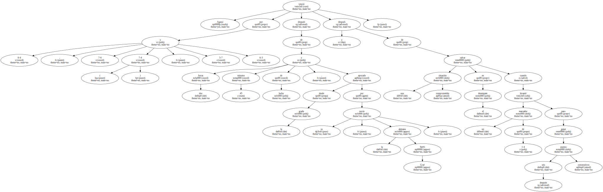Tras perder este set , Philippoussis destrozó su raqueta contra el suelo en un arranque de ira incontrolada , pero el australiano logró calmarse poco después y con saques a 216 kilómetros por hora se hizo con el tercer set.
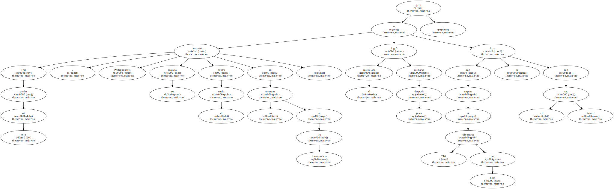En el cuarto , el mejor resto de Agassi terminó neutralizando la fuerza de " Scud " , y desmoralizándole también.
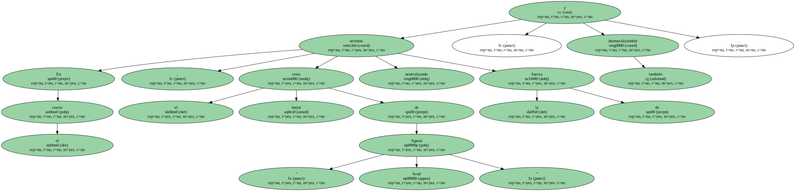Agassi se enfrentará en cuartos con uno de los dos marroquíes que han revolucionado el torneo , Hicham Arazi , que venció al francés Nicolas Escudé por 6-4 , 6-3 y 7-6.
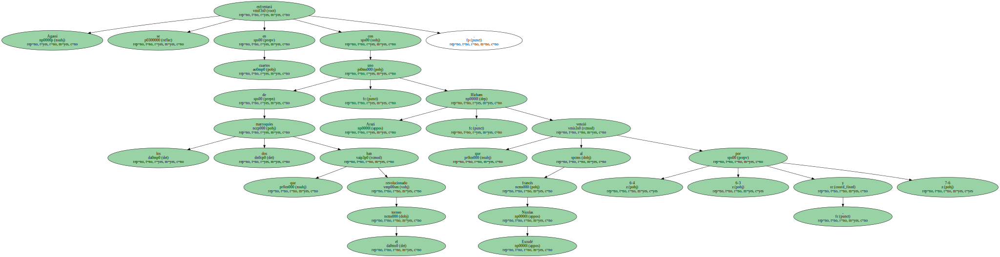Ni siquiera este año , que las pistas han sido cambiadas y la velocidad se ha multiplicado vertiginosamente hasta convertirlas en cristal , como señaló Sampras , Philippoussis podrá llevarse el trofeo.
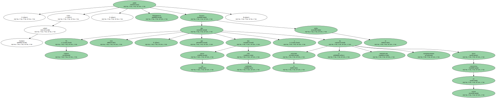La esperanza australiana se mantiene no obstante el Lleyton Hewitt que lleva ganados 13 partidos consecutivos y que mañana se enfrenta con el sueco Magnus Norman ( 12 ).
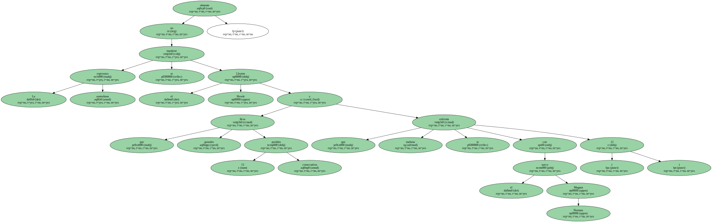" Obviamente tiene una gran experiencia " , dijo Philippoussis sobre su verdugo , " con 29 años está jugando el mejor tenis de su vida , es algo increíble ".
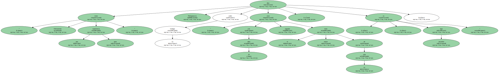" Golpea a la bola con la mayor claridad que nunca he visto . No es un jugador agradable para encontrarse en los torneos , lo sacaría de mi camino si pudiera " , señaló.
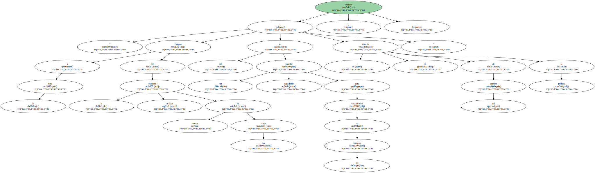Pete Sampras volvió a dejarse un set en su camino pero alcanzó los cuartos al derrotar al checo Slava Dosedel por 6-1 , 2-6 3-6 , y 6-1.
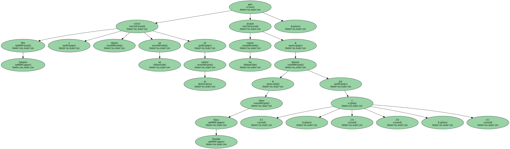El también estadounidense Chris Woodruff dejó a los británicos sin aliento al eliminar a Tim Henman ( 11 ) , por 7-5 , 1-6 , 6-4 , 3-6 y 7-5.
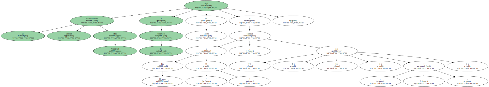En el cuadro femenino , la japonesa Ai Sugiyama destrozó con sus golpes de fondo la frágil moral de la francesa Mary Pierce ( 4 ) , campeona en 1995 , por 7-5 y 6-4 , mientras que la estadounidense Lindsay Davenport acabó con la novia de Philippoussis en este torneo , la rusa Anna Kournikova , por 6-4 y 6-3.
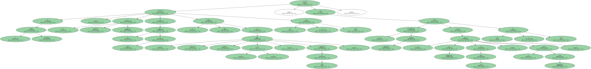Avanzó también la estadounidense Jennifer Capriati , que con su victoria sobre la suiza Patty Schnyder ( 6-3 , 4-6 y 6-1 ) volvió a los cuartos de final de un grande después de siete años.
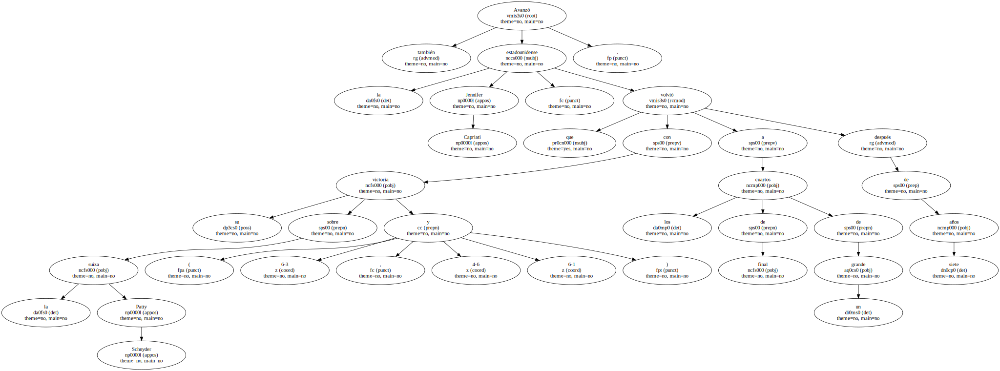